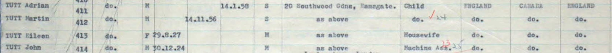
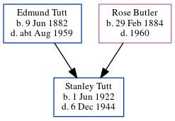

John Ernest Tutt 1923 - 2007
[ Home ] | [ Calendar ] | [ Surnames Index ] | [ Errors ] | [ Family History ]The youngest of 7 children of Edmund Tutt (a bricklayer's labourer) and Rose Butler (a laundress), John Tutt, the second cousin once-removed on the father's side of Nigel Horne, was born in Thanet, Kent, England on 30 Dec 19231 and. He married Eileen Davis (with whom he had 2 surviving children Martin and Adrian J) in Thanet around May 19513. In 1958, he was living at 20 Southwood Gardens, Ramsgate, Kent, England4. In 1958 he travelled from Montreal, Quebec, Canada to Southampton, Hampshire, England (r. M. S. Ivernia), arriving on 1 Aug.
He died on 19 Jan 2007 in Medway, Kent, England2.
Parents
- Edmund Thomas was born on 9 Jun 1882
- Rose was born on 29 Feb 1884
Citations
- England & Wales births 1837-2006 - Findmypast
- England & Wales Government Probate Death Index 1858-2019 - Findmypast
- England & Wales Marriages 1837-2005 - Findmypast
- UK Incoming Passenger Lists, 1878-1960 Online publication - Provo, UT, USA: Ancestry.com Operations Inc, 2008.Original data - Board of Trade: Commercial and Statistical Department and successors: Inwards Passenger Lists. Kew, Surrey, England: The National Archives of the UK (TNA). Series BT26,
Media
RMS Ivernia Manifest

England & Wales births 1837-2006 - BMD/B/1924/1/AZ/001358/004
England & Wales Marriages 1837-2005 - BMD-M-1951-2-AZ-001107-035
England & Wales Government Probate Death Index 1858-2019 - GBOR-GOVPROBATE-B-2007-2008-00117368
Family Tree
Map
Generated by ged2site. Last updated on Jul 3, 2024
Known Issues
Listed in the residence for 1958, but spouse Eileen Davis is not
1939 UK register information missing